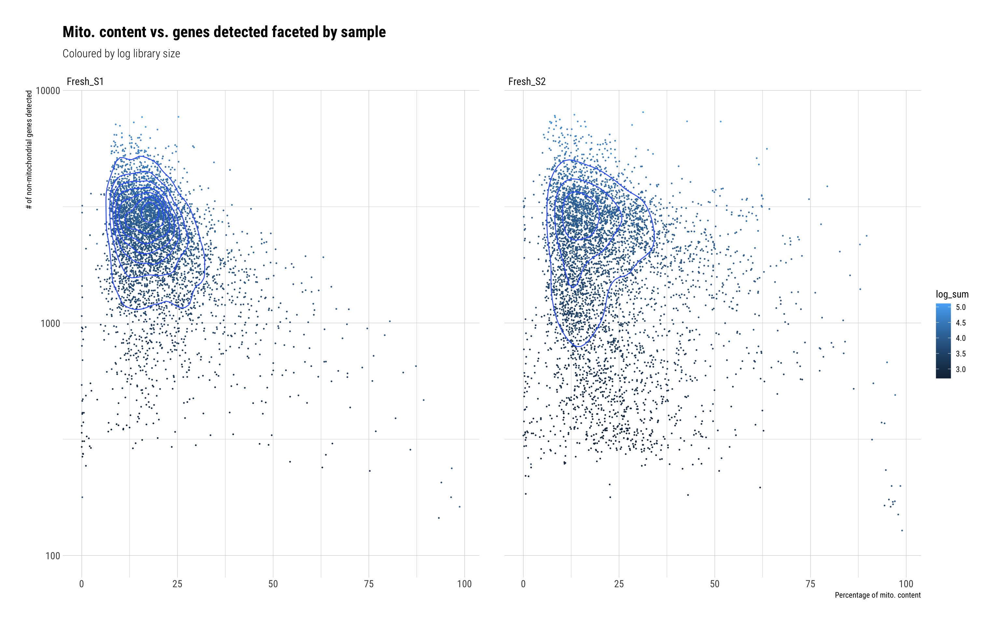
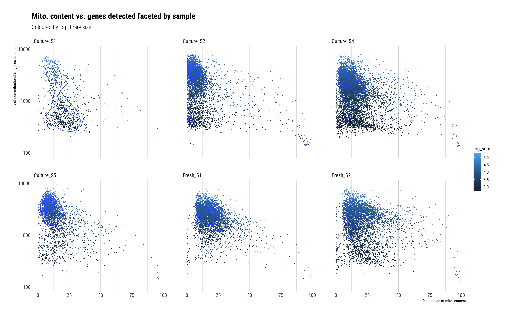

Comparison of the ‘new’ skin tissue protocol with skin samples 1,2,4 & 5
Dominique Paul
2022-02-01
Last updated: 2022-02-01
Checks: 6 1
Knit directory: 02_Protocol/analysis/
This reproducible R Markdown analysis was created with workflowr (version 1.7.0). The Checks tab describes the reproducibility checks that were applied when the results were created. The Past versions tab lists the development history.
The R Markdown file has unstaged changes. To know which version of the R Markdown file created these results, you’ll want to first commit it to the Git repo. If you’re still working on the analysis, you can ignore this warning. When you’re finished, you can run wflow_publish to commit the R Markdown file and build the HTML.
Great job! The global environment was empty. Objects defined in the global environment can affect the analysis in your R Markdown file in unknown ways. For reproduciblity it’s best to always run the code in an empty environment.
The command set.seed(20211228) was run prior to running the code in the R Markdown file. Setting a seed ensures that any results that rely on randomness, e.g. subsampling or permutations, are reproducible.
Great job! Recording the operating system, R version, and package versions is critical for reproducibility.
Nice! There were no cached chunks for this analysis, so you can be confident that you successfully produced the results during this run.
Great job! Using relative paths to the files within your workflowr project makes it easier to run your code on other machines.
Great! You are using Git for version control. Tracking code development and connecting the code version to the results is critical for reproducibility.
The results in this page were generated with repository version c4b210d. See the Past versions tab to see a history of the changes made to the R Markdown and HTML files.
Note that you need to be careful to ensure that all relevant files for the analysis have been committed to Git prior to generating the results (you can use wflow_publish or wflow_git_commit). workflowr only checks the R Markdown file, but you know if there are other scripts or data files that it depends on. Below is the status of the Git repository when the results were generated:
Ignored files:
Ignored: .DS_Store
Ignored: Metadata/.DS_Store
Ignored: Metadata/cell_annotation_markers/.DS_Store
Ignored: Paper/
Ignored: analysis/.DS_Store
Ignored: analysis/.RData
Ignored: analysis/.Rhistory
Ignored: analysis/Supple_table_1.png
Ignored: analysis/Unused/.DS_Store
Ignored: analysis/figure/
Ignored: code/.DS_Store
Ignored: code/seeds/.DS_Store
Ignored: data/
Ignored: output/.DS_Store
Ignored: output/plots/.DS_Store
Ignored: output/plots_31Jan/.DS_Store
Untracked files:
Untracked: analysis/P2_03_Fresh_only_subclustering_v2.Rmd
Untracked: analysis/logs/P2_01_data_comparison.Rmd-2022-02-01-16h-27m-18s-err.txt
Untracked: analysis/logs/P2_01_data_comparison.Rmd-2022-02-01-16h-27m-18s-out.txt
Untracked: analysis/logs/P2_01_data_comparison.Rmd-2022-02-01-16h-28m-27s-err.txt
Untracked: analysis/logs/P2_01_data_comparison.Rmd-2022-02-01-16h-28m-27s-out.txt
Untracked: analysis/logs/P2_01_data_comparison.Rmd-2022-02-01-19h-12m-34s-err.txt
Untracked: analysis/logs/P2_01_data_comparison.Rmd-2022-02-01-19h-12m-34s-out.txt
Untracked: analysis/logs/P2_01_data_comparison.Rmd-2022-02-01-20h-17m-22s-err.txt
Untracked: analysis/logs/P2_01_data_comparison.Rmd-2022-02-01-20h-17m-22s-out.txt
Untracked: analysis/logs/P2_02_Cell_Cycle.Rmd-2022-02-01-19h-54m-36s-err.txt
Untracked: analysis/logs/P2_02_Cell_Cycle.Rmd-2022-02-01-19h-54m-36s-out.txt
Untracked: analysis/logs/P2_03_Fresh_only_subclustering.Rmd-2022-02-01-19h-58m-19s-err.txt
Untracked: analysis/logs/P2_03_Fresh_only_subclustering.Rmd-2022-02-01-19h-58m-19s-out.txt
Unstaged changes:
Modified: analysis/P2_01_data_comparison.Rmd
Modified: analysis/P2_03_Fresh_only_subclustering.Rmd
Modified: analysis/admin.rmd
Note that any generated files, e.g. HTML, png, CSS, etc., are not included in this status report because it is ok for generated content to have uncommitted changes.
These are the previous versions of the repository in which changes were made to the R Markdown (analysis/P2_01_data_comparison.Rmd) and HTML (docs/P2_01_data_comparison.html) files. If you’ve configured a remote Git repository (see ?wflow_git_remote), click on the hyperlinks in the table below to view the files as they were in that past version.
| File | Version | Author | Date | Message |
|---|---|---|---|---|
| Rmd | c4b210d | dominique-paul-uzh | 2022-02-01 | Annotated clusters, next step is subclustering |
| html | c4b210d | dominique-paul-uzh | 2022-02-01 | Annotated clusters, next step is subclustering |
| html | 97b097b | dominique-paul-uzh | 2022-01-30 | Added new clustering after meeting 29-Jan-2022 |
| Rmd | 239a294 | dominique-paul-uzh | 2022-01-30 | Added new clustering after meeting 29-Jan-2022 |
| html | 239a294 | dominique-paul-uzh | 2022-01-30 | Added new clustering after meeting 29-Jan-2022 |
| Rmd | 1923ae3 | dominique-paul-uzh | 2022-01-12 | first commit |
| html | 1923ae3 | dominique-paul-uzh | 2022-01-12 | first commit |
Loading and preprocess the data
Identify cultured samples
# Skin control data loaded as one group
samples_skin <- list.files(path="../data/skin_tissue/scRNA_datasets",
pattern="matrix.mtx",
full.names=TRUE,
recursive=TRUE)
samples_skin <- dirname(samples_skin)
samples_skin <- grep("control", samples_skin, value=TRUE) # Only use control data
samples_skin <- grep("filtered", samples_skin, value=TRUE)
names(samples_skin) <- sapply(strsplit(samples_skin, "/"), .subset, 5) # This number might have to be adapted for other file paths or folder structures
names(samples_skin) <- gsub("o24300_1_13-control1_BB", "Culture_S1", names(samples_skin))
names(samples_skin) <- gsub("o24300_1_09-control2_MFB", "Culture_S2", names(samples_skin))
names(samples_skin) <- gsub("o24793_1_09-BB_skin_control", "Culture_S3",names(samples_skin))
names(samples_skin) <- gsub("o25154_1_1-SS08_control", "Culture_S4", names(samples_skin))
names(samples_skin) <- gsub("o25154_1_3-SS18_control", "Culture_S5", names(samples_skin))
samples_skin <- samples_skin[!names(samples_skin) %in% "Culture_S3"]Load fresh samples
# Fresh data loaded together
samples_fresh <- list.files(path="../data/fresh_data",
pattern="matrix.mtx",
full.names=TRUE,
recursive=TRUE)
samples_fresh <- dirname(samples_fresh)
samples_fresh <- grep("filtered", samples_fresh, value=TRUE)
names(samples_fresh) <- sapply(strsplit(samples_fresh, "/"), .subset, 4) # This number might have to be adapted for other file paths or folder structures
names(samples_fresh) <- gsub("01_o25154_1_5-HC_fresh", "Fresh_S1", names(samples_fresh))
names(samples_fresh) <- gsub("02_o25459_1_6-HS_Blaz", "Fresh_S2", names(samples_fresh))
# Load data
sce_fresh <- DropletUtils::read10xCounts(samples=samples_fresh)
# Factoring
sce_fresh$Sample <- factor(sce_fresh$Sample) # Factor the sample name to save space
# Renaming
rownames(sce_fresh) <- rowData(sce_fresh)$Symbol # Rename the rows
sce_fresh <- sce_fresh[duplicated(rownames(sce_fresh)) == FALSE,] # remove duplicate rownames
colnames(sce_fresh) <- paste0(sce_fresh$Sample, ".", sce_fresh$Barcode) # Rename the columns
# add protocol name
sce_fresh$Protocol <- factor("Fresh")Load fresh and cultured samples as one dataset
samples_all <- c(samples_skin, samples_fresh)
# Load data
sce_all <- DropletUtils::read10xCounts(samples=samples_all)
# Factoring
sce_all$Sample <- factor(sce_all$Sample) # Factor the sample name to save space
# Renaming
rownames(sce_all) <- rowData(sce_all)$Symbol # Rename the rows
sce_all <- sce_all[duplicated(rownames(sce_all)) == FALSE,] # remove duplicate rownames
colnames(sce_all) <- paste0(sce_all$Sample, ".", sce_all$Barcode) # Rename the columns
# Add column for protocol
sce_all$Protocol <- factor(ifelse(grepl("Fresh", sce_all$Sample), "Fresh", "Culture"))Basic filtering
We run a crude filtering on the cells to eliminate the majority of bad reads and speed up the runtime of the code below.
crude_filtering <- function(sce, sce_name){
original_sce_dimensions <- dim(sce)
sce <- sce[rowSums(counts(sce)>0) > 10, # We only keep genes expressed in more than ten cells
colSums(counts(sce) >0) > 150] # We only keep cells with more than 150 genes expressed
new_sce_dimensions <- dim(sce)
absolute_changes <- original_sce_dimensions - new_sce_dimensions
relative_changes <- absolute_changes / original_sce_dimensions
cat(paste0("\n\n### ", sce_name))
cat(paste0("\n\n#### Dropped ", absolute_changes[1], " genes out of ", original_sce_dimensions[1], " (~", round(100*relative_changes[1],2), "%). ", new_sce_dimensions[1], " genes remaining.\n\n"))
cat(paste0("\n#### Dropped ", absolute_changes[2], " cells out of ", original_sce_dimensions[2], " (~", round(100*relative_changes[2],2), "%). ", new_sce_dimensions[2], " cells remaining.\n\n" ))
sce
}
sce_fresh <- crude_filtering(sce_fresh, "Fresh")Fresh
Dropped 5236 genes out of 21544 (~24.3%). 16308 genes remaining.
Dropped 189 cells out of 9941 (~1.9%). 9752 cells remaining.
sce_all <- crude_filtering(sce_all, "All")All
Dropped 4063 genes out of 21544 (~18.86%). 17481 genes remaining.
Dropped 456 cells out of 28171 (~1.62%). 27715 cells remaining.
Overview of doublets dropped comparison
# identify doublets
# seed_to_use <- readRDS("../code/seeds/seed8_fresh.rds")
# set.seed(seed_to_use)
set.seed(100)
sce_fresh <- scDblFinder(sce_fresh, samples="Sample")
# seed_to_use <- readRDS("../code/seeds/seed9_all.rds")
# set.seed(seed_to_use)
set.seed(100)
sce_all <- scDblFinder(sce_all, samples="Sample")
# plot the number of doublets per sample
# Fresh
cat(paste0("\n\n## Fresh samples only \n\n"))Fresh samples only
table(sce_fresh$scDblFinder.class, sce_fresh$Sample) %>%
as.data.frame() %>%
dplyr::rename("Type"="Var1", "Sample"="Var2") %>%
ggplot(aes(x=Sample, y=Freq, fill = Type, label=Freq)) +
geom_bar(stat="identity",
position = position_stack(reverse = TRUE)) +
labs(title = "Doublets identified",
x="",
y = "Number of Cells")
| Version | Author | Date |
|---|---|---|
| 1923ae3 | dominique-paul-uzh | 2022-01-12 |
# Fresh and culture
# plot the number of doublets per sample
cat(paste0("\n\n## Fresh and cultured samples \n\n"))Fresh and cultured samples
table(sce_all$scDblFinder.class, sce_all$Sample) %>%
as.data.frame() %>%
dplyr::rename("Type"="Var1", "Sample"="Var2") %>%
ggplot(aes(x=Sample, y=Freq, fill = Type, label=Freq)) +
geom_bar(stat="identity",
position = position_stack(reverse = TRUE)) +
labs(title = "Doublets identified",
x="",
y = "Number of Cells")
| Version | Author | Date |
|---|---|---|
| 1923ae3 | dominique-paul-uzh | 2022-01-12 |
# finally remove droplets
sce_fresh <- sce_fresh[,colData(sce_fresh)$scDblFinder.class=="singlet"]
sce_all <- sce_all[,colData(sce_all)$scDblFinder.class=="singlet"]Quality Control
Mitochondria check
Do we have mitochondrial genes in the data?
identify_mitochondrial_genes <- function(sce, sce_name){
rowData(sce)$is_mitochondrial <- grepl("^(MT-)", rowData(sce)$Symbol, ignore.case=TRUE)
cat(paste0("\n\n### ", sce_name, " \n\n"))
print(table(rowData(sce)$is_mitochondrial) %>%
as.data.frame() %>%
rename(is.mito.gene=Var1) %>%
kable() %>%
kable_styling())
sce
}
sce_fresh <- identify_mitochondrial_genes(sce_fresh, "Fresh samples only")Fresh samples only
| is.mito.gene | Freq |
|---|---|
| FALSE | 16273 |
| TRUE | 35 |
sce_all <- identify_mitochondrial_genes(sce_all, "Fresh and cultured samples")Fresh and cultured samples
| is.mito.gene | Freq |
|---|---|
| FALSE | 17444 |
| TRUE | 37 |
Add quality control metrics
# Fresh only
sce_fresh <- scater::addPerCellQC(sce_fresh, list(Mt = rowData(sce_fresh)$is_mitochondrial,
genes= !rowData(sce_fresh)$is_mitochondrial),
percent_top=c(50, 100, 200, 500))
sce_fresh$log_sum <- log10(sce_fresh$sum)
sce_fresh$log_total <- log10(sce_fresh$total)
# Fresh and culture
sce_all <- scater::addPerCellQC(sce_all, list(Mt = rowData(sce_all)$is_mitochondrial,
genes= !rowData(sce_all)$is_mitochondrial),
percent_top=c(50, 100, 200, 500))
sce_all$log_sum <- log10(sce_all$sum)
sce_all$log_total <- log10(sce_all$total)First QC charts
plot_qc_charts <- function(sce, sce_name){
cat(paste0("\n\n### ", sce_name, " \n\n"))
# cat("\n### Number of genes \n\n")
plot1 <- ggplot(as.data.frame(colData(sce)), aes(x=Sample, y=log10(detected))) +
geom_violin(scale="count") +
labs(title="Number of detected genes",
subtitle=sce_name,
x="",
y="Number of detected genes (log10)") +
theme(axis.text.x = element_text(angle = 45, vjust = 0.5, hjust=0.5))
# cat("\n### Number of genes \n\n")
plot2 <- ggplot(as.data.frame(colData(sce)), aes(x=Sample, y=log_total)) +
geom_violin(scale="count") +
labs(title="Total gene expression counts",
subtitle=sce_name,
x="",
y="Total gene expression counts (log10)") +
theme(axis.text.x = element_text(angle = 45, vjust = 0.5, hjust=0.5))
# plot3 <- ggplot(as.data.frame(qcs), aes(x=Sample, y=subsets_Mt_percent)) +
plot3 <- ggplot(as.data.frame(colData(sce)), aes(x=Sample, y=subsets_Mt_percent)) +
geom_violin(scale="count") +
labs(title="Share of mitochondrial genes",
subtitle=sce_name,
x="",
y="Mitochodrial share (percent)") +
theme(axis.text.x = element_text(angle = 45, vjust = 0.5, hjust=0.5))
gridExtra::grid.arrange(plot1, plot2, plot3, nrow=1)
}
plot_qc_charts(sce_fresh, "Fresh samples only")Fresh samples only

| Version | Author | Date |
|---|---|---|
| 1923ae3 | dominique-paul-uzh | 2022-01-12 |
plot_qc_charts(sce_all, "Fresh and cultured samples")
Mitochondria QC charts
plot_mitochondrial_qc_charts <- function(sce, sce_name){
cat(paste0("\n\n### ", sce_name, " \n\n"))
mito1 <- ggplot(as.data.frame(colData(sce)),
aes(x=log_total, y=subsets_genes_detected, color=subsets_Mt_percent)) +
geom_point(size=0.25) +
labs(title="Library size vs. gene count",
subtitle="percentual share of mitochondrial genes in blue",
x="Sum of expression values by cell",
y="# of non-mitochondrial genes detected") +
geom_density_2d() +
scale_y_log10()
mito2 <- ggplot(as.data.frame(colData(sce)),
aes(x=subsets_Mt_percent,
y=subsets_genes_detected,
color=log_sum)) +
geom_point(size=0.25) +
labs(title="Mito. content vs. genes detected",
subtitle="coloured by log library size",
x="Percentage of mito. content",
y="# of non-mitochondrial genes detected") +
scale_y_log10(limits=c(100,NA)) +
geom_density_2d()
gridExtra::grid.arrange(mito1, mito2, nrow=1)
}
plot_mitochondrial_qc_charts(sce_fresh, "Fresh samples only")Fresh samples only

| Version | Author | Date |
|---|---|---|
| 1923ae3 | dominique-paul-uzh | 2022-01-12 |
plot_mitochondrial_qc_charts(sce_all, "Fresh and cultured samples")
Library size vs. mito share by sample
cat(paste0("\n\n### Fresh samples only \n\n"))Fresh samples only
ggplot(as.data.frame(colData(sce_fresh)),
aes(x=total, y=subsets_genes_detected, color=subsets_Mt_percent)) +
geom_point(size=0.25) +
labs(title="Library size vs. gene count faceted by sample",
subtitle="percentual share of mitochondrial genes in blue",
x="Sum of expression values by cell",
y="# of non-mitochondrial genes detected") +
scale_x_log10() +
geom_density_2d() +
scale_y_log10() +
facet_wrap(~Sample)
| Version | Author | Date |
|---|---|---|
| 1923ae3 | dominique-paul-uzh | 2022-01-12 |
cat(paste0("\n\n### Fresh and cultured samples \n\n"))Fresh and cultured samples
ggplot(as.data.frame(colData(sce_all)),
aes(x=total, y=subsets_genes_detected, color=subsets_Mt_percent)) +
geom_point(size=0.25) +
labs(title="Library size vs. gene count faceted by sample",
subtitle="percentual share of mitochondrial genes in blue",
x="Sum of expression values by cell",
y="# of non-mitochondrial genes detected") +
scale_x_log10() +
geom_density_2d() +
scale_y_log10() +
facet_wrap(~Sample)
| Version | Author | Date |
|---|---|---|
| 1923ae3 | dominique-paul-uzh | 2022-01-12 |
Mito. percent vs. genes by sample
cat(paste0("\n\n### Fresh samples only \n\n"))Fresh samples only
ggplot(as.data.frame(colData(sce_fresh)),
aes(x=subsets_Mt_percent,
y=subsets_genes_detected,
color=log_sum)) +
geom_point(size=0.25) +
labs(title="Mito. content vs. genes detected faceted by sample",
subtitle="Coloured by log library size",
x="Percentage of mito. content",
y="# of non-mitochondrial genes detected") +
scale_y_log10(limits=c(100,NA)) +
geom_density_2d() +
facet_wrap(~Sample)
| Version | Author | Date |
|---|---|---|
| 1923ae3 | dominique-paul-uzh | 2022-01-12 |
cat(paste0("\n\n### Fresh and cultured samples \n\n"))Fresh and cultured samples
ggplot(as.data.frame(colData(sce_all)),
aes(x=subsets_Mt_percent,
y=subsets_genes_detected,
color=log_sum)) +
geom_point(size=0.25) +
labs(title="Mito. content vs. genes detected faceted by sample",
subtitle="Coloured by log library size",
x="Percentage of mito. content",
y="# of non-mitochondrial genes detected") +
scale_y_log10(limits=c(100,NA)) +
geom_density_2d() +
facet_wrap(~Sample)
| Version | Author | Date |
|---|---|---|
| 1923ae3 | dominique-paul-uzh | 2022-01-12 |
Filtering
Cells are marked to be dropped if:
- Sum of all expression values in a given cell is lower than 2 median absolute deviations from the sample mean
- Number of genes of a given cell is lower than 2 median absolute deviations from the average number of genes in the given sample
- The percentage of mitochondrial gene expression values is higher than 2 median absolute deviations from the sample mean
- More than 25% percent of a genes expression values are from mitochondrial genes
- The sum of all expression values is less than 1500
- If they express less than 500 genes
identify_lowq_cells <- function(sce){
# Relative criteria for filtering
sce$total_expression_counts_drop <- isOutlier(sce$sum, nmads=2, type="lower", batch=sce$Sample, log=TRUE)
sce$genes_detected_drop <- isOutlier(sce$detected, nmads=2, type="lower", batch=sce$Sample, log=TRUE)
sce$mito_drop <- isOutlier(sce$subsets_Mt_percent, nmads=2, type="higher", batch=sce$Sample)
# Absolute thresholds for filtering
# Drop cells with a sum expression values lower than 1500
sce$total_expression_counts_drop_manual_thresh <- sce$sum < 1500
# A manual threshold: we require cells to have at least 500 genes expressed
sce$genes_detected_manual_thresh <- sce$detected < 500
# Drop cells with a percentage of mitochondrial expression values above a certain value
sce$mito_drop_manual_thresh_25 <- sce$subsets_Mt_percent > 25
sce$to_be_dropped <- sce$total_expression_counts_drop |
sce$genes_detected_drop |
sce$mito_drop |
sce$total_expression_counts_drop_manual_thresh |
sce$genes_detected_manual_thresh |
sce$mito_drop_manual_thresh_25
sce
}
sce_fresh <- identify_lowq_cells(sce_fresh)
sce_all <- identify_lowq_cells(sce_all)How many cells are captured by each filter?
print_filter_overview <- function(sce, sce_name){
cat(paste0("\n\n### ", sce_name, " \n\n"))
print(t(data.frame(Drop_via_lib_size = sum(sce$total_expression_counts_drop),
Drop_via_lib_size_manual = sum(sce$total_expression_counts_drop_manual_thresh),
Drop_via_detected_genes = sum(sce$genes_detected_drop),
Drop_via_manual_genes_thresh = sum(sce$genes_detected_manual_thresh),
Drop_via_mito_percentage = sum(sce$mito_drop),
Drop_via_mito_thresh_25 = sum(sce$mito_drop_manual_thresh_25),
Drop_via_joint_criteria = sum(sce$total_expression_counts_drop |
sce$genes_detected_drop |
sce$mito_drop |
sce$total_expression_counts_drop_manual_thresh |
sce$mito_drop_manual_thresh_25 |
sce$genes_detected_manual_thresh),
Total_cells = nrow(colData(sce)))) %>%
kable() %>%
kable_styling())
}
print_filter_overview(sce_fresh, "Fresh samples only")Fresh samples only
| Drop_via_lib_size | 676 |
| Drop_via_lib_size_manual | 807 |
| Drop_via_detected_genes | 919 |
| Drop_via_manual_genes_thresh | 533 |
| Drop_via_mito_percentage | 835 |
| Drop_via_mito_thresh_25 | 2272 |
| Drop_via_joint_criteria | 2915 |
| Total_cells | 9107 |
print_filter_overview(sce_all, "Fresh and cultured samples")Fresh and cultured samples
| Drop_via_lib_size | 1881 |
| Drop_via_lib_size_manual | 3836 |
| Drop_via_detected_genes | 2863 |
| Drop_via_manual_genes_thresh | 2565 |
| Drop_via_mito_percentage | 2788 |
| Drop_via_mito_thresh_25 | 4233 |
| Drop_via_joint_criteria | 7546 |
| Total_cells | 25383 |
How many cells are affected by each filter
show_panel_overview_filters <- function(sce, sce_name){
cat(paste0("\n\n### ", sce_name, " {.tabset }\n\n"))
### Absolute numbers ###
absolute_count <- rbind(
table(sce$Sample),
table(sce$total_expression_counts_drop, sce$Sample)[2,],
table(sce$total_expression_counts_drop_manual_thresh, sce$Sample)[2,],
table(sce$genes_detected_drop, sce$Sample)[2,],
table(sce$genes_detected_drop, sce$Sample)[2,],
table(sce$mito_drop, sce$Sample)[2,],
table(sce$mito_drop_manual_thresh_25, sce$Sample)[2,],
table(sce$to_be_dropped, sce$Sample)[2,],
table(sce$to_be_dropped, sce$Sample)[1,]) %>%
as.data.frame()
rownames(absolute_count) <- c("Number of cells",
"Library size relative filter",
"Library size manual filter",
"Number of genes relative filter",
"Number of genes manual filter",
"Mito. percentage relative threshold",
"Mito. percentage manual threshold",
"Total dropped",
"Cells remaining")
absolute_count[, "Total"] <- rowSums(absolute_count)
cat("\n\n#### Table (Absolute numbers) \n\n")
print(absolute_count %>%
kable() %>%
kable_styling())
cat("\n\n#### Panel (Absolute numbers) \n\n")
print(absolute_count[2:7,-dim(absolute_count)[2]] %>%
tibble::rownames_to_column() %>%
tidyr::gather(colname, value, -rowname) %>%
ggplot(aes(x = colname, y = rowname, fill = value)) +
geom_tile() +
geom_text(aes(label=value), color="white") +
scale_x_discrete(position="top") +
labs(title="Cells filtered out by respective filter",
subtitle="Number of cells",
x="",
y="") +
guides(fill="none"))
### Relative numbers ###
# divide by number of cells to give a relative count
relative_count <- mapply('/', absolute_count, absolute_count[1,]) %>%
round(3) %>%
as.data.frame()
rownames(relative_count) <- c("Number of cells",
"Library size relative filter",
"Library size manual filter",
"Number of genes relative filter",
"Number of genes manual filter",
"Mito. percentage relative threshold",
"Mito. percentage manual threshold",
"Total dropped",
"Cells remaining")
cat("\n\n#### Table (Relative numbers by sample) \n\n")
print(relative_count %>%
mutate_all(list(~paste0(.*100, "%"))) %>%
kable() %>%
kable_styling())
cat("\n\n#### Panel (Relative numbers by sample) \n\n")
print(relative_count[2:7,-dim(relative_count)[2]] %>%
tibble::rownames_to_column() %>%
tidyr::gather(colname, value, -rowname) %>%
ggplot(aes(x = colname, y = rowname, fill = value)) +
geom_tile() +
geom_text(aes(label=scales::percent(value, accuracy = 0.1)), color="white") +
scale_x_discrete(position="top") +
labs(title="Cells filtered out by respective filter",
subtitle="Percentage of all cells in given sample before filtering",
x="",
y="") +
guides(fill="none"))
}
show_panel_overview_filters(sce_fresh, "Fresh samples only")Fresh samples only
Table (Absolute numbers)
| Fresh_S1 | Fresh_S2 | Total | |
|---|---|---|---|
| Number of cells | 4392 | 4715 | 9107 |
| Library size relative filter | 287 | 389 | 676 |
| Library size manual filter | 147 | 660 | 807 |
| Number of genes relative filter | 417 | 502 | 919 |
| Number of genes manual filter | 417 | 502 | 919 |
| Mito. percentage relative threshold | 361 | 474 | 835 |
| Mito. percentage manual threshold | 827 | 1445 | 2272 |
| Total dropped | 1080 | 1835 | 2915 |
| Cells remaining | 3312 | 2880 | 6192 |

Table (Relative numbers by sample)
| Fresh_S1 | Fresh_S2 | Total | |
|---|---|---|---|
| Number of cells | 100% | 100% | 100% |
| Library size relative filter | 6.5% | 8.3% | 7.4% |
| Library size manual filter | 3.3% | 14% | 8.9% |
| Number of genes relative filter | 9.5% | 10.6% | 10.1% |
| Number of genes manual filter | 9.5% | 10.6% | 10.1% |
| Mito. percentage relative threshold | 8.2% | 10.1% | 9.2% |
| Mito. percentage manual threshold | 18.8% | 30.6% | 24.9% |
| Total dropped | 24.6% | 38.9% | 32% |
| Cells remaining | 75.4% | 61.1% | 68% |
Panel (Relative numbers by sample)

| Version | Author | Date |
|---|---|---|
| 1923ae3 | dominique-paul-uzh | 2022-01-12 |
show_panel_overview_filters(sce_all, "Fresh and cultured samples")Fresh and cultured samples
Table (Absolute numbers)
| Culture_S1 | Culture_S2 | Culture_S4 | Culture_S5 | Fresh_S1 | Fresh_S2 | Total | |
|---|---|---|---|---|---|---|---|
| Number of cells | 976 | 4473 | 7986 | 2853 | 4380 | 4715 | 25383 |
| Library size relative filter | 0 | 429 | 549 | 224 | 290 | 389 | 1881 |
| Library size manual filter | 464 | 640 | 1674 | 250 | 146 | 662 | 3836 |
| Number of genes relative filter | 0 | 685 | 908 | 353 | 417 | 500 | 2863 |
| Number of genes manual filter | 0 | 685 | 908 | 353 | 417 | 500 | 2863 |
| Mito. percentage relative threshold | 58 | 581 | 915 | 397 | 358 | 479 | 2788 |
| Mito. percentage manual threshold | 263 | 329 | 1017 | 349 | 831 | 1444 | 4233 |
| Total dropped | 558 | 1090 | 2353 | 628 | 1083 | 1834 | 7546 |
| Cells remaining | 418 | 3383 | 5633 | 2225 | 3297 | 2881 | 17837 |

Table (Relative numbers by sample)
| Culture_S1 | Culture_S2 | Culture_S4 | Culture_S5 | Fresh_S1 | Fresh_S2 | Total | |
|---|---|---|---|---|---|---|---|
| Number of cells | 100% | 100% | 100% | 100% | 100% | 100% | 100% |
| Library size relative filter | 0% | 9.6% | 6.9% | 7.9% | 6.6% | 8.3% | 7.4% |
| Library size manual filter | 47.5% | 14.3% | 21% | 8.8% | 3.3% | 14% | 15.1% |
| Number of genes relative filter | 0% | 15.3% | 11.4% | 12.4% | 9.5% | 10.6% | 11.3% |
| Number of genes manual filter | 0% | 15.3% | 11.4% | 12.4% | 9.5% | 10.6% | 11.3% |
| Mito. percentage relative threshold | 5.9% | 13% | 11.5% | 13.9% | 8.2% | 10.2% | 11% |
| Mito. percentage manual threshold | 26.9% | 7.4% | 12.7% | 12.2% | 19% | 30.6% | 16.7% |
| Total dropped | 57.2% | 24.4% | 29.5% | 22% | 24.7% | 38.9% | 29.7% |
| Cells remaining | 42.8% | 75.6% | 70.5% | 78% | 75.3% | 61.1% | 70.3% |

Plots cells that will be dropped
show_violin_plots_of_dropped <- function(sce, sce_name){
cat(paste0("\n\n### ", sce_name, " {.tabset}\n\n"))
# for the right colouring we order the levels manually
sce$to_be_dropped <- factor(sce$to_be_dropped, levels=c(FALSE, TRUE))
plot1 <- plotColData(sce,
x="Sample",
y="log_total",
colour_by="to_be_dropped",
point_size=0.5) +
labs(title="Library size",
subtitle="Dropped cells in orange",
x="",
y="Library size (log-scale)") +
guides(colour="none") +
theme_ipsum_rc() +
theme(axis.text.x = element_text(angle = 45, vjust = 0.5, hjust=0.5))
plot2 <- plotColData(sce,
x="Sample",
y="detected",
colour_by="to_be_dropped",
point_size=0.5) +
labs(title="Genes detected",
subtitle="Dropped cells in orange",
x="",
y="Genes detected") +
guides(colour="none") +
theme_ipsum_rc() +
theme(axis.text.x = element_text(angle = 45, vjust = 0.5, hjust=0.5))
plot3 <- plotColData(sce,
x="Sample",
y="subsets_Mt_percent",
colour_by="to_be_dropped",
point_size=0.5) +
labs(title="Mitochondrial counts as % library size",
x="",
subtitle="Dropped cells in orange",
y="Mito. gene expression values as % of total") +
guides(colour="none") +
theme_ipsum_rc() +
theme(axis.text.x = element_text(angle = 45, vjust = 0.5, hjust=0.5))
print(gridExtra::grid.arrange(plot1, plot2, plot3, nrow=1))
}
show_violin_plots_of_dropped(sce_fresh, "Fresh samples only")Fresh samples only

TableGrob (1 x 3) “arrange”: 3 grobs z cells name grob 1 1 (1-1,1-1) arrange gtable[layout] 2 2 (1-1,2-2) arrange gtable[layout] 3 3 (1-1,3-3) arrange gtable[layout]
show_violin_plots_of_dropped(sce_all, "Fresh and cultured samples")
Mitochondria plots after QC filtering
show_mito_plots <- function(sce, sce_name){
cat(paste0("\n\n### ", sce_name, " {.tabset}\n\n"))
# for the right colouring we order the levels manually
sce$to_be_dropped <- factor(sce$to_be_dropped, levels=c(TRUE, FALSE))
mito1 <- ggplot(as.data.frame(colData(sce)),
aes(x=log_total,
y=subsets_genes_detected,
color=to_be_dropped)) +
geom_point(size=0.5) +
labs(title="Library size vs. genes detected",
subtitle="Cells dropped in red",
x="Sum of expression values by cell",
y="# of non-mitochondrial genes") +
geom_density_2d(colour="black", alpha=0.6) +
get_boolean_colour_scale() +
scale_y_log10() +
guides(colour="none")
mito2 <- ggplot(as.data.frame(colData(sce)),
aes(x=subsets_Mt_percent,
y=subsets_genes_detected,
color=to_be_dropped)) +
geom_point(size=0.5) +
labs(title="Mito. content v. genes detected",
subtitle="Cells dropped in red",
x="Percentage of mito. content",
y="Genes detected") +
scale_y_log10(limits=c(100,NA)) +
geom_density_2d(colour="black", alpha=0.6) +
get_boolean_colour_scale() +
guides(colour="none")
gridExtra::grid.arrange(mito1, mito2, nrow=1)
}
show_mito_plots(sce_fresh, "Fresh samples only")Fresh samples only

| Version | Author | Date |
|---|---|---|
| 1923ae3 | dominique-paul-uzh | 2022-01-12 |
show_mito_plots(sce_all, "Fresh and cultured samples")
Gene and expression counts stratified by sample
Coloured by to_be_dropped
cat(paste0("\n\n### Fresh samples only \n\n"))Fresh samples only
ggplot(as.data.frame(colData(sce_fresh)),
aes(x=log_total,
y=subsets_genes_detected,
color=to_be_dropped)) +
geom_point(size=0.1) +
labs(title="Library size vs. genes detected",
subtitle="Cells dropped in red",
x="Library size (log10)",
y="# of non-mitochondrial genes") +
scale_y_log10() +
facet_wrap(~Sample) +
get_boolean_colour_scale() +
guides(colour="none")
| Version | Author | Date |
|---|---|---|
| 1923ae3 | dominique-paul-uzh | 2022-01-12 |
cat(paste0("\n\n### Fresh and cultured samples\n\n"))Fresh and cultured samples
ggplot(as.data.frame(colData(sce_all)),
aes(x=log_total,
y=subsets_genes_detected,
color=to_be_dropped)) +
geom_point(size=0.1) +
labs(title="Library size vs. genes detected",
subtitle="Cells dropped in red",
x="Library size (log10)",
y="# of non-mitochondrial genes") +
scale_y_log10() +
facet_wrap(~Sample) +
get_boolean_colour_scale() +
guides(colour="none")
| Version | Author | Date |
|---|---|---|
| 1923ae3 | dominique-paul-uzh | 2022-01-12 |
Coloured by mitochondrial content
cat(paste0("\n\n### Fresh samples only \n\n"))Fresh samples only
ggplot(as.data.frame(colData(sce_fresh)),
aes(x=log_total,
y=subsets_genes_detected,
color=subsets_Mt_percent)) +
geom_point(size=0.1) +
labs(title="Library size vs. genes detected",
subtitle="Coloured by fraction of mitochondrial counts",
x="Library size (log10)",
y="# of non-mitochondrial genes") +
scale_y_log10() +
facet_wrap(~Sample) +
scale_colour_viridis_c(option = "inferno", limits=c(0,50), oob=scales::squish)
| Version | Author | Date |
|---|---|---|
| 1923ae3 | dominique-paul-uzh | 2022-01-12 |
cat(paste0("\n\n### Fresh and cultured samples\n\n"))Fresh and cultured samples
ggplot(as.data.frame(colData(sce_all)),
aes(x=log_total,
y=subsets_genes_detected,
color=subsets_Mt_percent)) +
geom_point(size=0.1) +
labs(title="Library size vs. genes detected",
subtitle="Coloured by fraction of mitochondrial counts",
x="Library size (log10)",
y="# of non-mitochondrial genes") +
scale_y_log10() +
facet_wrap(~Sample) +
scale_colour_viridis_c(option = "inferno", limits=c(0,50), oob=scales::squish)
| Version | Author | Date |
|---|---|---|
| 1923ae3 | dominique-paul-uzh | 2022-01-12 |
Library size distributions before and after deleting cells marked in QC
By sample
# Fresh only before QC
cat(paste0("\n\n### Fresh samples only - before QC \n\n"))Fresh samples only - before QC
sce_fresh %>%
ggplot() +
geom_density(aes(log10(total), fill=Sample, color=Sample),alpha=0.1) +
facet_grid(Protocol~.) +
theme_ipsum_rc() +
labs(title="Distribution of cell library sizes",
x="Log total expression", y="Density") +
theme(panel.spacing = unit(2, "mm")) +
get_sample_colours(levels(colData(sce_fresh)$Sample), type="fill") +
get_sample_colours(levels(colData(sce_fresh)$Sample))
| Version | Author | Date |
|---|---|---|
| 1923ae3 | dominique-paul-uzh | 2022-01-12 |
# Fresh only after QC
cat(paste0("\n\n### Fresh samples only - after QC \n\n"))Fresh samples only - after QC
sce_fresh[, !sce_fresh$to_be_dropped] %>%
ggplot() +
geom_density(aes(log10(total), fill=Sample, color=Sample),alpha=0.1) +
facet_grid(Protocol~.) +
theme_ipsum_rc() +
labs(title="Distribution of cell library sizes",
x="Log total expression", y="Density") +
theme(panel.spacing = unit(2, "mm")) +
get_sample_colours(levels(colData(sce_fresh)$Sample), type="fill") +
get_sample_colours(levels(colData(sce_fresh)$Sample))
| Version | Author | Date |
|---|---|---|
| 1923ae3 | dominique-paul-uzh | 2022-01-12 |
# Fresh and culture before QC
cat(paste0("\n\n### Fresh and cultured samples - before QC\n\n"))Fresh and cultured samples - before QC
sce_all %>%
ggplot() +
geom_density(aes(log10(total), fill=Sample, color=Sample),alpha=0.1) +
facet_grid(Protocol~.) +
theme_ipsum_rc() +
labs(title="Distribution of cell library sizes",
x="Log total expression", y="Density") +
theme(panel.spacing = unit(2, "mm")) +
get_sample_colours(levels(colData(sce_all)$Sample), type="fill") +
get_sample_colours(levels(colData(sce_all)$Sample))
| Version | Author | Date |
|---|---|---|
| 1923ae3 | dominique-paul-uzh | 2022-01-12 |
# Fresh and culture after QC
cat(paste0("\n\n### Fresh and cultured samples - after QC\n\n"))Fresh and cultured samples - after QC
sce_all[, !sce_all$to_be_dropped] %>%
ggplot() +
geom_density(aes(log10(total), fill=Sample, color=Sample),alpha=0.1) +
facet_grid(Protocol~.) +
theme_ipsum_rc() +
labs(title="Distribution of cell library sizes",
x="Log total expression", y="Density") +
theme(panel.spacing = unit(2, "mm")) +
get_sample_colours(levels(colData(sce_all)$Sample), type="fill") +
get_sample_colours(levels(colData(sce_all)$Sample))
| Version | Author | Date |
|---|---|---|
| 1923ae3 | dominique-paul-uzh | 2022-01-12 |
By protocol for fresh and cultured samples
cat("\n\n### Before QC\n\n")Before QC
sce_all %>%
ggplot() +
theme_ipsum_rc() +
labs(title="Distribution of cell library sizes",
x="Log total expression", y="Density") +
geom_density(aes(log10(total), fill=Protocol, color=Protocol), alpha=0.3) +
get_protocol_colours(levels(colData(sce_all)$Protocol), type="fill") +
get_protocol_colours(levels(colData(sce_all)$Protocol))
| Version | Author | Date |
|---|---|---|
| 1923ae3 | dominique-paul-uzh | 2022-01-12 |
cat("\n\n### After QC\n\n")After QC
sce_all[, !sce_all$to_be_dropped] %>%
ggplot() +
theme_ipsum_rc() +
labs(title="Distribution of cell library sizes",
x="Log total expression", y="Density") +
geom_density(aes(log10(total), fill=Protocol, color=Protocol), alpha=0.3) +
get_protocol_colours(levels(colData(sce_all)$Protocol), type="fill") +
get_protocol_colours(levels(colData(sce_all)$Protocol))
| Version | Author | Date |
|---|---|---|
| 1923ae3 | dominique-paul-uzh | 2022-01-12 |
Gene count distributions after deleting cells marked in QC
By sample
# Fresh only after QC
cat(paste0("\n\n### Fresh samples only - after QC \n\n"))Fresh samples only - after QC
sce_fresh[, !sce_fresh$to_be_dropped] %>%
ggplot() +
geom_density(aes(detected, fill=Sample, color=Sample),alpha=0.1) +
facet_grid(Protocol~.) +
theme_ipsum_rc() +
labs(title="Distribution of gene counts",
x="Log total expression", y="Density") +
theme(panel.spacing = unit(2, "mm")) +
get_sample_colours(levels(colData(sce_fresh)$Sample), type="fill") +
get_sample_colours(levels(colData(sce_fresh)$Sample))
| Version | Author | Date |
|---|---|---|
| 1923ae3 | dominique-paul-uzh | 2022-01-12 |
# Fresh and culture after QC
cat(paste0("\n\n### Fresh and cultured samples - after QC\n\n"))Fresh and cultured samples - after QC
sce_all[, !sce_all$to_be_dropped] %>%
ggplot() +
geom_density(aes(detected, fill=Sample, color=Sample),alpha=0.1) +
facet_grid(Protocol~.) +
theme_ipsum_rc() +
labs(title="Distribution of gene counts",
x="Log total expression", y="Density") +
theme(panel.spacing = unit(2, "mm")) +
get_sample_colours(levels(colData(sce_all)$Sample), type="fill") +
get_sample_colours(levels(colData(sce_all)$Sample))
| Version | Author | Date |
|---|---|---|
| 1923ae3 | dominique-paul-uzh | 2022-01-12 |
By protocol for fresh and cultured samples
sce_all[, !sce_all$to_be_dropped] %>%
ggplot() +
theme_ipsum_rc() +
labs(title="Distribution of gene counts",
x="Log total expression", y="Density") +
geom_density(aes(detected, fill=Protocol, color=Protocol), alpha=0.3) +
get_protocol_colours(levels(colData(sce_all)$Protocol), type="fill") +
get_protocol_colours(levels(colData(sce_all)$Protocol))
| Version | Author | Date |
|---|---|---|
| 1923ae3 | dominique-paul-uzh | 2022-01-12 |
Number of cells dropped and kept per sample
### Fresh only ###
cat(paste0("\n\n### Fresh samples only {.tabset}\n\n"))Fresh samples only
# Absolute values
cat(paste0("\n\n#### Absolute \n\n"))Absolute
table(sce_fresh$to_be_dropped, sce_fresh$Sample) %>%
as.data.frame() %>%
rename(Dropped=Var1) %>%
mutate(Dropped=factor(Dropped, levels=c(TRUE, FALSE))) %>%
ggplot(aes(x=Var2, y=Freq, fill=Dropped)) +
geom_bar(stat="identity", position="stack") +
labs(title="Absolute number of cells dropped by sample",
subtitle="Cells dropped coloured in red",
x="", y="Number of cells") +
get_boolean_colour_scale(type="fill") +
guides(fill="none")
| Version | Author | Date |
|---|---|---|
| 1923ae3 | dominique-paul-uzh | 2022-01-12 |
# Relative values
cat(paste0("\n\n#### Relative \n\n"))Relative
table(sce_fresh$to_be_dropped, sce_fresh$Sample) %>%
as.data.frame() %>%
rename(Dropped=Var1) %>%
mutate(Dropped=factor(Dropped, levels=c(TRUE, FALSE))) %>%
ggplot(aes(x=Var2, y=Freq, fill=Dropped)) +
geom_bar(stat="identity", position="fill") +
labs(title="Relative number of cells dropped by sample",
subtitle="Cells dropped coloured in red",
x="", y="Number of cells") +
get_boolean_colour_scale(type="fill") +
guides(fill="none")
| Version | Author | Date |
|---|---|---|
| 1923ae3 | dominique-paul-uzh | 2022-01-12 |
### Fresh v culture ###
cat(paste0("\n\n### Fresh and cultured samples {.tabset}\n\n"))Fresh and cultured samples
# Absolute values
cat(paste0("\n\n#### Absolute \n\n"))Absolute
table(sce_all$to_be_dropped, sce_all$Sample) %>%
as.data.frame() %>%
rename(Dropped=Var1) %>%
mutate(Dropped=factor(Dropped, levels=c(TRUE, FALSE))) %>%
ggplot(aes(x=Var2, y=Freq, fill=Dropped)) +
geom_bar(stat="identity", position="stack") +
labs(title="Absolute number of cells dropped by sample",
subtitle="Cells dropped coloured in red",
x="", y="Number of cells") +
get_boolean_colour_scale(type="fill") +
guides(fill="none")
| Version | Author | Date |
|---|---|---|
| 1923ae3 | dominique-paul-uzh | 2022-01-12 |
# Relative values
cat(paste0("\n\n#### Relative \n\n"))Relative
table(sce_all$to_be_dropped, sce_all$Sample) %>%
as.data.frame() %>%
rename(Dropped=Var1) %>%
mutate(Dropped=factor(Dropped, levels=c(TRUE, FALSE))) %>%
ggplot(aes(x=Var2, y=Freq, fill=Dropped)) +
geom_bar(stat="identity", position="fill") +
labs(title="Relative number of cells dropped by sample",
subtitle="Cells dropped coloured in red",
x="", y="Number of cells") +
get_boolean_colour_scale(type="fill") +
guides(fill="none")
| Version | Author | Date |
|---|---|---|
| 1923ae3 | dominique-paul-uzh | 2022-01-12 |
Finally drop cells from dataset
sce_fresh_filtered <- sce_fresh[, !sce_fresh$to_be_dropped]
sce_all_filtered <- sce_all[, !sce_all$to_be_dropped]
# Drop genes which are expressed in only one or no cells at all
# These genes do not have an influence on the remaining analysis and
# can cause issues with normalisation
# fresh cells
mask <- rowSums(counts(sce_fresh_filtered) > 0) > 1
print(sum(mask==FALSE))[1] 2sce_fresh_filtered <- sce_fresh_filtered[mask,]
# fresh and cultured cells
mask <- rowSums(counts(sce_all_filtered) > 0) > 1
print(sum(mask==FALSE))[1] 1sce_all_filtered <- sce_all_filtered[mask,]Normalisation
We normalise the data with scTransform
normalise_with_scTransform <- function(sce){
sce <- logNormCounts(sce)
sce_seurat <- as.Seurat(sce, counts="counts", data="logcounts")
seurat_normalized = sce_seurat %>%
Seurat::SCTransform(verbose = FALSE, assay="originalexp", method="glmGamPoi", min_cells=1)
sct_HVGs <- seurat_normalized@assays$SCT@var.features
assay(sce, "corrected") <- seurat_normalized@assays$SCT@counts
assay(sce, "logcounts") <- seurat_normalized@assays$SCT@data
rowData(sce)[, "sct_HVG"] <- FALSE
rowData(sce)[sct_HVGs, "sct_HVG"] <- TRUE
sce
}
sce_fresh_filtered <- normalise_with_scTransform(sce_fresh_filtered)Warning: Invalid name supplied, making object name syntactically valid. New
object name is Seurat..SCTransform.originalexp; see ?make.names for more details
on syntax validitysce_all_filtered <- normalise_with_scTransform(sce_all_filtered)Warning: Invalid name supplied, making object name syntactically valid. New
object name is Seurat..SCTransform.originalexp; see ?make.names for more details
on syntax validityFeature Selection - HVGs
We select the 2000 most variable genes
num_hvg=2000
select_hvgs <- function(sce, sce_name){
cat(paste0("\n\n## ", sce_name, " \n\n"))
# model the gene variance
dec.sce <- scran::modelGeneVar(sce, block=sce$Sample)
hvg_sub <- getTopHVGs(dec.sce, n=num_hvg)
mean_var_comb_sub <- purrr::map(unique(sce$Sample), ~ {
dec.sce$per.block[[.x]] %>%
as_tibble %>%
mutate(row_names = rownames(dec.sce$per.block[[.x]]),
is_hvg = row_names %in% hvg_sub,
Sample = .x)
}) %>%
purrr::reduce(rbind)
print(mean_var_comb_sub %>%
ggplot() +
geom_point(aes(x = mean, y = total, color= is_hvg)) +
geom_line(aes(x=mean, y= tech)) +
labs(y="Variance",x="Mean expression") +
facet_wrap(~Sample) +
scale_color_manual(values=c("orange","black")) +
labs(x="Mean of log-expression",
y="Variance of log-expression",
title="Variance of the expression values as a function of the mean",
subtitle=paste0("Top ", num_hvg, " highly variable genes")))
list("sco"=dec.sce, "hvg"=hvg_sub)
}
res.fresh <- select_hvgs(sce_fresh_filtered, "Fresh samples only")Fresh samples only
Warning in regularize.values(x, y, ties, missing(ties), na.rm = na.rm):
collapsing to unique 'x' values
| Version | Author | Date |
|---|---|---|
| 1923ae3 | dominique-paul-uzh | 2022-01-12 |
dec.sce.fresh <- res.fresh$sco
hvg.fresh <- res.fresh$hvg
res.all <- select_hvgs(sce_all_filtered, "Fresh and cultured samples")Fresh and cultured samples
Warning in regularize.values(x, y, ties, missing(ties), na.rm = na.rm):
collapsing to unique 'x' values
Warning in regularize.values(x, y, ties, missing(ties), na.rm = na.rm):
collapsing to unique 'x' values
Warning in regularize.values(x, y, ties, missing(ties), na.rm = na.rm):
collapsing to unique 'x' values
Warning in regularize.values(x, y, ties, missing(ties), na.rm = na.rm):
collapsing to unique 'x' values
Warning in regularize.values(x, y, ties, missing(ties), na.rm = na.rm):
collapsing to unique 'x' values
| Version | Author | Date |
|---|---|---|
| 1923ae3 | dominique-paul-uzh | 2022-01-12 |
dec.sce.all <- res.all$sco
hvg.all <- res.all$hvgPeek at highly variable genes
cat(paste0("\n\n### Fresh samples only \n\n"))Fresh samples only
print(kable_styling(kable(dec.sce.fresh[order(dec.sce.fresh$bio, decreasing=TRUE)[1:10],], digits=2)))| mean | total | tech | bio | p.value | FDR | per.block.Fresh_S1.mean | per.block.Fresh_S1.total | per.block.Fresh_S1.tech | per.block.Fresh_S1.bio | per.block.Fresh_S1.p.value | per.block.Fresh_S1.FDR | per.block.Fresh_S2.mean | per.block.Fresh_S2.total | per.block.Fresh_S2.tech | per.block.Fresh_S2.bio | per.block.Fresh_S2.p.value | per.block.Fresh_S2.FDR | |
|---|---|---|---|---|---|---|---|---|---|---|---|---|---|---|---|---|---|---|
| PTGDS | 1.28 | 3.37 | 0.44 | 2.93 | 0 | 0 | 1.43 | 4.41 | 0.44 | 3.97 | 0 | 0 | 1.13 | 2.34 | 0.45 | 1.89 | 0 | 0 |
| DCN | 1.58 | 3.33 | 0.45 | 2.87 | 0 | 0 | 1.41 | 3.25 | 0.44 | 2.81 | 0 | 0 | 1.74 | 3.40 | 0.46 | 2.94 | 0 | 0 |
| VIM | 3.48 | 2.63 | 0.24 | 2.39 | 0 | 0 | 3.33 | 4.10 | 0.21 | 3.89 | 0 | 0 | 3.63 | 1.16 | 0.27 | 0.90 | 0 | 0 |
| COL1A1 | 1.46 | 2.72 | 0.39 | 2.33 | 0 | 0 | 0.75 | 0.95 | 0.39 | 0.56 | 0 | 0 | 2.18 | 4.48 | 0.39 | 4.09 | 0 | 0 |
| COL1A2 | 1.55 | 2.73 | 0.42 | 2.31 | 0 | 0 | 1.00 | 1.53 | 0.43 | 1.09 | 0 | 0 | 2.10 | 3.93 | 0.40 | 3.52 | 0 | 0 |
| COL3A1 | 1.31 | 2.30 | 0.38 | 1.93 | 0 | 0 | 0.59 | 0.74 | 0.34 | 0.40 | 0 | 0 | 2.04 | 3.86 | 0.41 | 3.45 | 0 | 0 |
| COL6A2 | 1.56 | 2.34 | 0.45 | 1.89 | 0 | 0 | 1.27 | 2.29 | 0.44 | 1.85 | 0 | 0 | 1.85 | 2.38 | 0.45 | 1.93 | 0 | 0 |
| COL6A1 | 1.53 | 2.27 | 0.44 | 1.83 | 0 | 0 | 1.16 | 1.89 | 0.44 | 1.45 | 0 | 0 | 1.90 | 2.64 | 0.44 | 2.20 | 0 | 0 |
| CXCL14 | 1.30 | 2.27 | 0.45 | 1.81 | 0 | 0 | 1.07 | 1.48 | 0.44 | 1.04 | 0 | 0 | 1.53 | 3.05 | 0.47 | 2.58 | 0 | 0 |
| IGFBP7 | 2.03 | 2.08 | 0.39 | 1.69 | 0 | 0 | 1.93 | 2.23 | 0.38 | 1.85 | 0 | 0 | 2.13 | 1.93 | 0.40 | 1.54 | 0 | 0 |
cat(paste0("\n\n### Fresh and cultured samples \n\n"))Fresh and cultured samples
print(kable_styling(kable(dec.sce.all[order(dec.sce.all$bio, decreasing=TRUE)[1:10],], digits=2)))| mean | total | tech | bio | p.value | FDR | per.block.Culture_S1.mean | per.block.Culture_S1.total | per.block.Culture_S1.tech | per.block.Culture_S1.bio | per.block.Culture_S1.p.value | per.block.Culture_S1.FDR | per.block.Culture_S2.mean | per.block.Culture_S2.total | per.block.Culture_S2.tech | per.block.Culture_S2.bio | per.block.Culture_S2.p.value | per.block.Culture_S2.FDR | per.block.Culture_S4.mean | per.block.Culture_S4.total | per.block.Culture_S4.tech | per.block.Culture_S4.bio | per.block.Culture_S4.p.value | per.block.Culture_S4.FDR | per.block.Culture_S5.mean | per.block.Culture_S5.total | per.block.Culture_S5.tech | per.block.Culture_S5.bio | per.block.Culture_S5.p.value | per.block.Culture_S5.FDR | per.block.Fresh_S1.mean | per.block.Fresh_S1.total | per.block.Fresh_S1.tech | per.block.Fresh_S1.bio | per.block.Fresh_S1.p.value | per.block.Fresh_S1.FDR | per.block.Fresh_S2.mean | per.block.Fresh_S2.total | per.block.Fresh_S2.tech | per.block.Fresh_S2.bio | per.block.Fresh_S2.p.value | per.block.Fresh_S2.FDR | |
|---|---|---|---|---|---|---|---|---|---|---|---|---|---|---|---|---|---|---|---|---|---|---|---|---|---|---|---|---|---|---|---|---|---|---|---|---|---|---|---|---|---|---|
| CXCL8 | 1.57 | 3.23 | 0.35 | 2.88 | 0 | 0 | 2.08 | 4.33 | 0.40 | 3.93 | 0 | 0.00 | 2.46 | 4.78 | 0.32 | 4.46 | 0 | 0 | 1.85 | 3.68 | 0.49 | 3.20 | 0 | 0 | 2.17 | 4.60 | 0.35 | 4.25 | 0 | 0 | 0.39 | 1.06 | 0.25 | 0.81 | 0.00 | 0.00 | 0.47 | 0.93 | 0.30 | 0.63 | 0.00 | 0.00 |
| MT2A | 2.67 | 2.41 | 0.32 | 2.09 | 0 | 0 | 2.00 | 2.51 | 0.42 | 2.10 | 0 | 0.00 | 3.22 | 2.55 | 0.30 | 2.24 | 0 | 0 | 2.56 | 2.34 | 0.35 | 1.99 | 0 | 0 | 3.13 | 3.27 | 0.27 | 2.99 | 0 | 0 | 2.63 | 2.22 | 0.26 | 1.97 | 0.00 | 0.00 | 2.45 | 1.58 | 0.32 | 1.26 | 0.00 | 0.00 |
| MMP1 | 1.21 | 2.36 | 0.31 | 2.04 | 0 | 0 | 1.25 | 2.68 | 0.41 | 2.27 | 0 | 0.00 | 2.03 | 4.33 | 0.40 | 3.93 | 0 | 0 | 1.73 | 3.35 | 0.49 | 2.86 | 0 | 0 | 2.00 | 3.57 | 0.37 | 3.20 | 0 | 0 | 0.07 | 0.08 | 0.05 | 0.03 | 0.02 | 0.56 | 0.18 | 0.12 | 0.14 | -0.02 | 0.73 | 0.75 |
| MMP3 | 0.75 | 2.00 | 0.27 | 1.72 | 0 | 0 | 0.64 | 1.56 | 0.35 | 1.21 | 0 | 0.00 | 1.33 | 3.78 | 0.41 | 3.37 | 0 | 0 | 0.92 | 2.49 | 0.45 | 2.04 | 0 | 0 | 1.51 | 4.10 | 0.38 | 3.72 | 0 | 0 | 0.01 | 0.02 | 0.01 | 0.02 | 0.00 | 0.00 | 0.06 | 0.04 | 0.05 | -0.01 | 0.78 | 0.79 |
| KRT14 | 0.61 | 1.97 | 0.28 | 1.69 | 0 | 0 | 1.72 | 5.04 | 0.45 | 4.59 | 0 | 0.00 | 0.33 | 0.88 | 0.20 | 0.68 | 0 | 0 | 0.52 | 1.55 | 0.34 | 1.21 | 0 | 0 | 0.27 | 1.03 | 0.17 | 0.86 | 0 | 0 | 0.60 | 2.39 | 0.34 | 2.05 | 0.00 | 0.00 | 0.24 | 0.94 | 0.17 | 0.76 | 0.00 | 0.00 |
| DCN | 1.12 | 2.03 | 0.40 | 1.63 | 0 | 0 | 0.53 | 0.55 | 0.32 | 0.23 | 0 | 0.11 | 1.17 | 1.78 | 0.39 | 1.39 | 0 | 0 | 0.75 | 1.13 | 0.42 | 0.71 | 0 | 0 | 1.22 | 1.94 | 0.38 | 1.56 | 0 | 0 | 1.35 | 3.26 | 0.44 | 2.82 | 0.00 | 0.00 | 1.67 | 3.52 | 0.46 | 3.06 | 0.00 | 0.00 |
| VIM | 3.25 | 1.88 | 0.29 | 1.59 | 0 | 0 | 2.51 | 2.23 | 0.29 | 1.94 | 0 | 0.00 | 3.75 | 1.08 | 0.39 | 0.69 | 0 | 0 | 3.03 | 1.67 | 0.31 | 1.35 | 0 | 0 | 3.31 | 1.15 | 0.28 | 0.86 | 0 | 0 | 3.29 | 4.02 | 0.21 | 3.81 | 0.00 | 0.00 | 3.58 | 1.15 | 0.27 | 0.88 | 0.00 | 0.00 |
| CXCL3 | 1.05 | 1.94 | 0.37 | 1.56 | 0 | 0 | 1.00 | 1.91 | 0.39 | 1.52 | 0 | 0.00 | 1.27 | 2.42 | 0.40 | 2.01 | 0 | 0 | 1.25 | 2.43 | 0.48 | 1.95 | 0 | 0 | 1.82 | 3.36 | 0.38 | 2.98 | 0 | 0 | 0.48 | 0.78 | 0.29 | 0.49 | 0.00 | 0.00 | 0.48 | 0.72 | 0.31 | 0.42 | 0.00 | 0.00 |
| PTGDS | 0.70 | 1.68 | 0.32 | 1.35 | 0 | 0 | 0.27 | 0.38 | 0.20 | 0.18 | 0 | 0.02 | 0.73 | 1.32 | 0.35 | 0.97 | 0 | 0 | 0.36 | 0.67 | 0.26 | 0.40 | 0 | 0 | 0.43 | 0.80 | 0.25 | 0.55 | 0 | 0 | 1.37 | 4.43 | 0.44 | 3.98 | 0.00 | 0.00 | 1.01 | 2.46 | 0.43 | 2.03 | 0.00 | 0.00 |
| SOD2 | 2.47 | 1.68 | 0.34 | 1.35 | 0 | 0 | 2.16 | 1.69 | 0.38 | 1.32 | 0 | 0.00 | 2.72 | 1.66 | 0.29 | 1.37 | 0 | 0 | 2.76 | 1.73 | 0.32 | 1.41 | 0 | 0 | 3.13 | 1.96 | 0.27 | 1.69 | 0 | 0 | 2.15 | 1.83 | 0.33 | 1.51 | 0.00 | 0.00 | 1.94 | 1.22 | 0.42 | 0.79 | 0.00 | 0.00 |
Subset selection of HVGs
# fresh
rowData(sce_fresh_filtered)[,"is_hvg"] <- F
rowData(sce_fresh_filtered)[hvg.fresh,"is_hvg"] <- T
# fresh and culture
rowData(sce_all_filtered)[,"is_hvg"] <- F
rowData(sce_all_filtered)[hvg.all,"is_hvg"] <- T
# if we want to delete the other genes
# sce <- sce[hvg,]Batch correction
For batch correction we use the Harmony method. We only run batch correction for the single-cell experiments with merged samples.
run_batch_correction <- function(sce, sce_name){
cat(paste0("\n\n## ", sce_name, " {.tabset}\n\n"))
# Before batch effects
# run UMAP
set.seed(100)
sce <- runPCA(sce, exprs_values="logcounts", subset_row=rowData(sce)$is_hvg)
set.seed(100)
sce <- runUMAP(sce, dimred="PCA", n_neighbors=50, min_dist = 0.1, subset_row=rowData(sce)$is_hvg)
cat("\n\n### UMAP uncorrected \n\n")
print(plotReducedDim(sce, "UMAP", colour_by="Sample", point_size=0.5) +
ggtitle("UMAP prior to batch correction") +
guides(colour=guide_legend(override.aes=list(size=4))) +
theme_ipsum_rc())
# correct batch effects with Harmony
# set.seed(200)
meta_data <- colData(sce) %>%
as.data.frame() %>%
dplyr::select(c(Protocol, Sample))
set.seed(100)
reducedDim(sce, "harmony") <- harmony::HarmonyMatrix(data_mat=reducedDim(sce, "PCA"),
meta_data= meta_data,
vars_use=c("Sample"),
do_pca = FALSE, verbose=FALSE)
set.seed(100)
sce <- runUMAP(sce, dimred="harmony", n_neighbors=50, min_dist = 0.1) #, subset_row=rowData(sce)$is_hvg
cat("\n\n### UMAP corrected \n\n")
print(plotReducedDim(sce, "UMAP", colour_by="Sample", point_size=0.5) +
ggtitle("UMAP post batch correction - Harmony") +
guides(colour=guide_legend(override.aes=list(size=4))) +
theme_ipsum_rc())
sce
}
sce_fresh_filtered <- run_batch_correction(sce_fresh_filtered, "Fresh samples only")Fresh samples only

UMAP corrected

| Version | Author | Date |
|---|---|---|
| 1923ae3 | dominique-paul-uzh | 2022-01-12 |
sce_all_filtered <- run_batch_correction(sce_all_filtered, "Fresh and cultured samples")

Clustering with k=50
run_clustering <- function(sce){
set.seed(100)
g50 <- buildSNNGraph(sce, k=50, use.dimred = 'harmony', subset.row=rowData(sce)$is_hvg) # build graph
set.seed(100)
clust50 <- igraph::cluster_walktrap(g50)$membership # find groups
# Assign labels based on clusters
colLabels(sce) <- factor(clust50)
sce
}
sce_fresh_filtered <- run_clustering(sce_fresh_filtered)
sce_all_filtered <- run_clustering(sce_all_filtered)Visualise clusters and samples
# fresh data
cat("\n\n### Fresh samples only {.tabset}\n\n")Fresh samples only
# by sample
cat("\n\n#### Sample\n\n")Sample
plotReducedDim(sce_fresh_filtered, "UMAP", point_size=1,
colour_by="Sample") +
labs("UMAP coloured by sample") +
guides(colour = guide_legend(override.aes = list(size=2))) +
theme_ipsum_rc()
# by label
cat("\n\n#### Label\n\n")Label
plotReducedDim(sce_fresh_filtered, "UMAP", point_size=1,
colour_by="label",
text_by = "label") +
labs("UMAP coloured by cluster label") +
guides(colour = guide_legend(override.aes = list(size=2))) +
theme_ipsum_rc()
# Fresh and cultured data
cat("\n\n### Fresh and cultured samples {.tabset}\n\n")Fresh and cultured samples
# by sample
cat("\n\n#### Sample\n\n")Sample
plotReducedDim(sce_all_filtered, "UMAP", point_size=1,
colour_by="Sample") +
labs("UMAP coloured by sample") +
guides(colour = guide_legend(override.aes = list(size=2))) +
theme_ipsum_rc()
# by label
cat("\n\n#### Label\n\n")Label
plotReducedDim(sce_all_filtered, "UMAP", point_size=1,
colour_by="label",
text_by = "label") +
labs("UMAP coloured by cluster label") +
guides(colour = guide_legend(override.aes = list(size=2))) +
theme_ipsum_rc()
# by Protocol
cat("\n\n#### Protocol\n\n")
Show cluster to sample mapping
The table below shows the mappings from unsupervised clustering to each individual sample. The clusters refer to the clustering performed on the dataset with all samples merged.
plot_cluster_to_sample_mapping <- function(sce, sce_name){
cat(paste0("\n\n### ", sce_name, " \n\n"))
tab <- table(sce$label, sce$Sample)
tab_annotation <- tab
tab_annotation[tab_annotation==0] <- ""
as.ggplot(pheatmap(tab, color=brewer.pal(n=9, name="Oranges"), display_numbers=tab_annotation, silent=T)) +
theme_ipsum_rc() +
labs(title="Clusters and samples") +
theme(axis.line=element_blank(),
axis.text.x=element_blank(),
axis.text.y=element_blank(),
axis.ticks=element_blank(),
axis.title.x=element_blank(),
axis.title.y=element_blank(),
legend.position="none",
panel.background=element_blank(),
panel.border=element_blank(),
panel.grid.major=element_blank(),
panel.grid.minor=element_blank(),
plot.background=element_blank())
}
plot_cluster_to_sample_mapping(sce_fresh_filtered, "Fresh samples only")Fresh samples only

plot_cluster_to_sample_mapping(sce_all_filtered, "Fresh and cultured samples")
Marker genes
Marker genes can help us identify clusters as specific cell types and also discover smaller changes between subclusters (e.g., changes in activation or differentiation state). We use the wilcoxon rank sum test.
wb_fresh <- createWorkbook()
addWorksheet(wb_fresh, "Intro")
writeData(wb_fresh, "Intro", data.frame("Marker genes for fresh samples only"), colNames=FALSE)
wb_all <- createWorkbook()
addWorksheet(wb_all, "Intro")
writeData(wb_all, "Intro", data.frame("Marker genes for fresh and cultured samples"), colNames=FALSE)get_marker_genes <- function(sce, sce_name, test_name, type_comparison, excel_workbook=NA, worksheet_prefix=""){
cat(paste0("\n\n## ", sce_name, " {.tabset} \n\n"))
prefix <- ifelse(test_name=="t", "logFC", "AUC")
# set limits depending on the marker method used (AUC only goes from 0 to 1)
heatmap_lower_limit <- ifelse(test_name=="t", heatmaplimits[0], 0)
heatmap_upper_limit <- ifelse(test_name=="t", heatmaplimits[1], 1)
# we filter for only the highly variable genes. Otherwise we will see many genes which
# are *significantly* different (high p-values), but not marginally different (low logFCs)
markers.all.up <- findMarkers(sce[rowData(sce)$is_hvg],
test.type=test_name,
pval.type=type_comparison,
direction="up",
block=sce$Sample)
for (i in 1:length(unique(names(markers.all.up)))){
cat("\n\n### ", "Cluster ", i, " \n\n")
interesting.all.up <- markers.all.up[[i]]
# print(kable_styling(kable(interesting.all.up[1:10,], digits=2)))
# cat("\n")
# Per default we only look at union of the top 5 markers per pairwise comparison
if (type_comparison=="any"){
cluster_markers <- interesting.all.up[interesting.all.up$Top <= 10,]
} else {
cluster_markers <- interesting.all.up[1:50,]
}
cluster_markers_logFCs <- getMarkerEffects(cluster_markers, prefix = prefix)
cluster_markers_logFCs[is.na(cluster_markers_logFCs)] <- 0
# Create pheatmap plot per cluster
heatmap_plt <- as.ggplot(pheatmap(cluster_markers_logFCs, breaks=seq(heatmap_lower_limit, heatmap_upper_limit, length.out=101), silent=T, cluster_cols=FALSE)) +
labs(title=paste0("Cluster ", i), subtitle="Pairwise comparisons")
theme_ipsum_rc() +
theme(axis.title.x=element_blank(),
axis.text.x=element_blank(),
axis.ticks.x=element_blank(),
axis.title.y=element_blank(),
axis.text.y=element_blank(),
axis.ticks.y=element_blank(),
panel.grid.major = element_blank(),
panel.grid.minor = element_blank())
print(heatmap_plt)
# write to excel if a workbook was specified. Else skip
if (is.na(excel_workbook)==FALSE){
sheet_name <- paste0(worksheet_prefix, "_c", i)
addWorksheet(excel_workbook, sheet_name)
cluster_markers_excel_out <- cbind("Gene"=rownames(interesting.all.up), interesting.all.up)
writeData(excel_workbook, sheet_name, cluster_markers_excel_out, rowNames = TRUE)
}
}
# Either only return the marker results or also the updated excel
if (is.na(excel_workbook) == TRUE){
markers.all.up
} else {
return(list("marker_results"=markers.all.up,
"excel_workbook"=excel_workbook))
}
}
res_fresh <- get_marker_genes(sce_fresh_filtered, "Fresh samples only", test="wilcox", type_comparison="any", excel_workbook=wb_fresh)Fresh samples only
Cluster 1
Warning in is.na(excel_workbook): is.na() applied to non-(list or vector) of
type 'S4'
| Version | Author | Date |
|---|---|---|
| 1923ae3 | dominique-paul-uzh | 2022-01-12 |
Cluster 2
Warning in is.na(excel_workbook): is.na() applied to non-(list or vector) of
type 'S4'
| Version | Author | Date |
|---|---|---|
| 1923ae3 | dominique-paul-uzh | 2022-01-12 |
Cluster 3
Warning in is.na(excel_workbook): is.na() applied to non-(list or vector) of
type 'S4'
| Version | Author | Date |
|---|---|---|
| 1923ae3 | dominique-paul-uzh | 2022-01-12 |
Cluster 4
Warning in is.na(excel_workbook): is.na() applied to non-(list or vector) of
type 'S4'
| Version | Author | Date |
|---|---|---|
| 1923ae3 | dominique-paul-uzh | 2022-01-12 |
Cluster 5
Warning in is.na(excel_workbook): is.na() applied to non-(list or vector) of
type 'S4'
| Version | Author | Date |
|---|---|---|
| 1923ae3 | dominique-paul-uzh | 2022-01-12 |
Cluster 6
Warning in is.na(excel_workbook): is.na() applied to non-(list or vector) of
type 'S4'
| Version | Author | Date |
|---|---|---|
| 1923ae3 | dominique-paul-uzh | 2022-01-12 |
Cluster 7
Warning in is.na(excel_workbook): is.na() applied to non-(list or vector) of
type 'S4'
| Version | Author | Date |
|---|---|---|
| 1923ae3 | dominique-paul-uzh | 2022-01-12 |
Cluster 8
Warning in is.na(excel_workbook): is.na() applied to non-(list or vector) of
type 'S4'
| Version | Author | Date |
|---|---|---|
| 1923ae3 | dominique-paul-uzh | 2022-01-12 |
Cluster 9
Warning in is.na(excel_workbook): is.na() applied to non-(list or vector) of
type 'S4'
Warning in is.na(excel_workbook): is.na() applied to non-(list or vector) of
type 'S4'
| Version | Author | Date |
|---|---|---|
| 1923ae3 | dominique-paul-uzh | 2022-01-12 |
markers_fresh <- res_fresh$marker_results
wb_fresh <- res_fresh$excel_workbook
# Fresh and cultured
res_all <- get_marker_genes(sce_all_filtered, "Fresh and cultured samples", test="wilcox", type_comparison="any", excel_workbook=wb_all)Fresh and cultured samples
Cluster 1
Warning in is.na(excel_workbook): is.na() applied to non-(list or vector) of
type 'S4'
| Version | Author | Date |
|---|---|---|
| 1923ae3 | dominique-paul-uzh | 2022-01-12 |
Cluster 2
Warning in is.na(excel_workbook): is.na() applied to non-(list or vector) of
type 'S4'
| Version | Author | Date |
|---|---|---|
| 1923ae3 | dominique-paul-uzh | 2022-01-12 |
Cluster 3
Warning in is.na(excel_workbook): is.na() applied to non-(list or vector) of
type 'S4'
| Version | Author | Date |
|---|---|---|
| 1923ae3 | dominique-paul-uzh | 2022-01-12 |
Cluster 4
Warning in is.na(excel_workbook): is.na() applied to non-(list or vector) of
type 'S4'
| Version | Author | Date |
|---|---|---|
| 1923ae3 | dominique-paul-uzh | 2022-01-12 |
Cluster 5
Warning in is.na(excel_workbook): is.na() applied to non-(list or vector) of
type 'S4'
| Version | Author | Date |
|---|---|---|
| 1923ae3 | dominique-paul-uzh | 2022-01-12 |
Cluster 6
Warning in is.na(excel_workbook): is.na() applied to non-(list or vector) of
type 'S4'
| Version | Author | Date |
|---|---|---|
| 1923ae3 | dominique-paul-uzh | 2022-01-12 |
Cluster 7
Warning in is.na(excel_workbook): is.na() applied to non-(list or vector) of
type 'S4'
| Version | Author | Date |
|---|---|---|
| 1923ae3 | dominique-paul-uzh | 2022-01-12 |
Cluster 8
Warning in is.na(excel_workbook): is.na() applied to non-(list or vector) of
type 'S4'
| Version | Author | Date |
|---|---|---|
| 1923ae3 | dominique-paul-uzh | 2022-01-12 |
Cluster 9
Warning in is.na(excel_workbook): is.na() applied to non-(list or vector) of
type 'S4'
| Version | Author | Date |
|---|---|---|
| 1923ae3 | dominique-paul-uzh | 2022-01-12 |
Cluster 10
Warning in is.na(excel_workbook): is.na() applied to non-(list or vector) of
type 'S4'
| Version | Author | Date |
|---|---|---|
| 1923ae3 | dominique-paul-uzh | 2022-01-12 |
Cluster 11
Warning in is.na(excel_workbook): is.na() applied to non-(list or vector) of
type 'S4'
| Version | Author | Date |
|---|---|---|
| 1923ae3 | dominique-paul-uzh | 2022-01-12 |
Cluster 12
Warning in is.na(excel_workbook): is.na() applied to non-(list or vector) of
type 'S4'
| Version | Author | Date |
|---|---|---|
| 1923ae3 | dominique-paul-uzh | 2022-01-12 |
Cluster 13
Warning in is.na(excel_workbook): is.na() applied to non-(list or vector) of
type 'S4'
| Version | Author | Date |
|---|---|---|
| 1923ae3 | dominique-paul-uzh | 2022-01-12 |
Cluster 14
Warning in is.na(excel_workbook): is.na() applied to non-(list or vector) of
type 'S4'
| Version | Author | Date |
|---|---|---|
| 1923ae3 | dominique-paul-uzh | 2022-01-12 |
Cluster 15
Warning in is.na(excel_workbook): is.na() applied to non-(list or vector) of
type 'S4'
| Version | Author | Date |
|---|---|---|
| 1923ae3 | dominique-paul-uzh | 2022-01-12 |
Cluster 16
Warning in is.na(excel_workbook): is.na() applied to non-(list or vector) of
type 'S4'
Warning in is.na(excel_workbook): is.na() applied to non-(list or vector) of
type 'S4'
| Version | Author | Date |
|---|---|---|
| 1923ae3 | dominique-paul-uzh | 2022-01-12 |
markers_all <- res_all$marker_results
wb_all <- res_all$excel_workbookAverage gene expression values for marker genes of all clusters
plot_heatmap_of_top_genes <- function(sce, markers, top_n=5){
# function assumes the sce columns: label, Sample
# get top genes
top_genes <- lapply(markers, function(marker_set){
marker_set %>%
as.data.frame() %>%
filter(Top <= top_n) %>%
rownames()
}) %>%
unlist(use.names=F) %>%
unique()
# Matrix to plot the heatmap of expression values.
# To avoid a too big plot we only keep a fraction of the cells i there are too many
nth_cell <- max(1, round(dim(sce)[2] / 1000,0))
sce_plot <- sce[top_genes, seq(1, dim(sce)[2], nth_cell)]
# We sort by cluster
sce_plot <- sce_plot[,order(sce_plot$label, sce_plot$Sample)]
# Anotations
column_annotations <- data.frame("Sample"=sce_plot$Sample, "Cluster"=factor(sce_plot$label), row.names=colnames(sce_plot))
# clip heatmap values to ensure that colour contrast is high
sce_plot <- assay(sce_plot, "logcounts")
sce_plot[sce_plot >=5] = 5
print(as.ggplot(pheatmap(sce_plot, annotation_col=column_annotations,
show_rownames=TRUE, show_colnames=FALSE, cluster_cols=FALSE, silent=TRUE,
color=inferno(50))) +
labs(title="Gene signatures per cluster identified",
subtitle=paste0("Top ", top_n, " differentially expressed genes per cluster; values are log-counts clipped at 5")) +
theme_ipsum_rc()+
theme(axis.line=element_blank(),axis.text.x=element_blank(),
axis.text.y=element_blank(),axis.ticks=element_blank(),
axis.title.x=element_blank(),
axis.title.y=element_blank(),legend.position="none",
panel.background=element_blank(),panel.border=element_blank(),panel.grid.major=element_blank(),
panel.grid.minor=element_blank(),plot.background=element_blank()))
}Fresh samples only
plot_heatmap_of_top_genes(sce_fresh_filtered, markers_fresh)
| Version | Author | Date |
|---|---|---|
| 1923ae3 | dominique-paul-uzh | 2022-01-12 |
Fresh and cultured samples
plot_heatmap_of_top_genes(sce_all_filtered, markers_all)
| Version | Author | Date |
|---|---|---|
| 1923ae3 | dominique-paul-uzh | 2022-01-12 |
# Fresh only
filename_marker_results <- "../docs/output/P2_Fresh_only.xlsx"
saveWorkbook(wb_fresh, file = filename_marker_results, overwrite = TRUE)
# Fresh and cultured
filename_marker_results <- "../docs/output/P2_Fresh_v_culture.xlsx"
saveWorkbook(wb_all, file = filename_marker_results, overwrite = TRUE)Foreign Annotations
plot_frequencies <- function(sce_object){
plt <- table(colData(sce_object)[,annotations_name], colData(sce_object)[,"Sample"]) %>%
as.data.frame() %>%
dplyr::rename("Cell.Type"="Var1", "Sample"="Var2") %>%
ggplot(aes(x=Sample, y=Freq, fill=Cell.Type)) +
geom_bar(stat="identity", position = "fill", width = 0.85) +
theme(panel.grid = element_blank(),
axis.text = element_text(size = 10),
axis.text.x = element_text(angle=30, hjust=1),
axis.text.y = element_text(size = 10),
plot.subtitle=element_text(size=12)) +
labs(title="Relative cell type abundances across samples",
subtitle=paste0("Labels: ", annotations_name))
return(plt)
}Blaz
csv_name <- "../Metadata/cell_annotation_markers/Markers_Blaz.csv"
group_colname <- "Cell.Type"
gene_colname <- "Markers"
annotations_name <- "labels_blaz"
cat("\n\n### Fresh samples only")Fresh samples only
sce_fresh_filtered <- annotate_with_other_labels(sce_fresh_filtered, csv_name, group_colname, gene_colname, annotations_name, visualisations=c("Barchart", "UMAP"))Genes in the gene sets NOT available in the dataset:
Keratinocyte: 1 (5% of 21)
Fibroblast: 2 (8% of 26)
Myeloid cell: 2 (17% of 12)
Lymphocyte: 2 (20% of 10)
Melanocyte: 1 (20% of 5)UMAP

| Version | Author | Date |
|---|---|---|
| 1923ae3 | dominique-paul-uzh | 2022-01-12 |
cat("\n\n### Fresh and cultured samples")Fresh and cultured samples
sce_all_filtered <- annotate_with_other_labels(sce_all_filtered, csv_name, group_colname, gene_colname, annotations_name, visualisations=c("Barchart", "UMAP"), tabset="###")Genes in the gene sets NOT available in the dataset:
Keratinocyte: 1 (5% of 21)
Fibroblast: 2 (8% of 26)
Myeloid cell: 2 (17% of 12)
Lymphocyte: 2 (20% of 10)
Melanocyte: 1 (20% of 5)
Save SCE objects and upload them to iSEE
# Save all objects as one rds
# Fresh samples only
file_path_fresh_unfiltered <- "../data/EOS_files/Fresh_EOS1_sce_unfiltered.rds"
saveRDS(sce_fresh, file=file_path_fresh_unfiltered)
file_path_fresh <- "../data/EOS_files/Fresh_EOS1_sce.rds"
saveRDS(sce_fresh_filtered, file=file_path_fresh)
upload_file_to_iSEE(file_path_fresh)Command executed:
scp -i ~/.ssh/id_imls_servers /Users/dominiquepaul/xRobinson\ Group/02_Protocol/data/EOS_Files/Fresh_EOS1_sce.rds dominique@imlspenticton.uzh.ch:/home/Shared/retger/synovial/data/protocol_paper_BBDP/sce/Fresh_EOS1_sce___2022-02-01.rds# Fresh and cultured samples
file_path_all_unfiltered <- "../data/EOS_files/FvC_EOS1_sce_unfiltered.rds"
saveRDS(sce_all, file=file_path_all_unfiltered)
file_path_all <- "../data/EOS_files/FvC_EOS1_sce.rds"
saveRDS(sce_all_filtered, file=file_path_all)
upload_file_to_iSEE(file_path_all)Command executed:
scp -i ~/.ssh/id_imls_servers /Users/dominiquepaul/xRobinson\ Group/02_Protocol/data/EOS_Files/FvC_EOS1_sce.rds dominique@imlspenticton.uzh.ch:/home/Shared/retger/synovial/data/protocol_paper_BBDP/sce/FvC_EOS1_sce___2022-02-01.rds
sessionInfo()R version 4.1.0 (2021-05-18)
Platform: x86_64-apple-darwin17.0 (64-bit)
Running under: macOS Big Sur 10.16
Matrix products: default
BLAS: /Library/Frameworks/R.framework/Versions/4.1/Resources/lib/libRblas.dylib
LAPACK: /Library/Frameworks/R.framework/Versions/4.1/Resources/lib/libRlapack.dylib
locale:
[1] en_US.UTF-8/en_US.UTF-8/en_US.UTF-8/C/en_US.UTF-8/en_US.UTF-8
attached base packages:
[1] parallel stats4 stats graphics grDevices utils datasets
[8] methods base
other attached packages:
[1] stringr_1.4.0 SeuratObject_4.0.4
[3] Seurat_4.0.6 BiocParallel_1.28.3
[5] dplyr_1.0.7 plyr_1.8.6
[7] RColorBrewer_1.1-2 batchelor_1.10.0
[9] ggplotify_0.1.0 openxlsx_4.2.5
[11] tidySingleCellExperiment_1.4.0 viridis_0.6.2
[13] viridisLite_0.4.0 scDblFinder_1.8.0
[15] hrbrthemes_0.8.6 AUCell_1.16.0
[17] GSEABase_1.56.0 graph_1.72.0
[19] annotate_1.72.0 XML_3.99-0.8
[21] AnnotationDbi_1.56.2 pheatmap_1.0.12
[23] kableExtra_1.3.4 scran_1.22.1
[25] scater_1.22.0 scuttle_1.4.0
[27] SingleCellExperiment_1.16.0 SummarizedExperiment_1.24.0
[29] Biobase_2.54.0 GenomicRanges_1.46.1
[31] GenomeInfoDb_1.30.0 IRanges_2.28.0
[33] S4Vectors_0.32.3 BiocGenerics_0.40.0
[35] MatrixGenerics_1.6.0 matrixStats_0.61.0
[37] ggplot2_3.3.5 workflowr_1.7.0
loaded via a namespace (and not attached):
[1] scattermore_0.7 R.methodsS3_1.8.1
[3] tidyr_1.1.4 bit64_4.0.5
[5] knitr_1.37 irlba_2.3.5
[7] DelayedArray_0.20.0 R.utils_2.11.0
[9] rpart_4.1-15 data.table_1.14.2
[11] KEGGREST_1.34.0 RCurl_1.98-1.5
[13] generics_0.1.1 ScaledMatrix_1.2.0
[15] callr_3.7.0 cowplot_1.1.1
[17] RSQLite_2.2.9 RANN_2.6.1
[19] future_1.23.0 bit_4.0.4
[21] spatstat.data_2.1-2 webshot_0.5.2
[23] xml2_1.3.3 httpuv_1.6.4
[25] isoband_0.2.5 assertthat_0.2.1
[27] xfun_0.29 jquerylib_0.1.4
[29] evaluate_0.14 promises_1.2.0.1
[31] fansi_1.0.2 igraph_1.2.10
[33] DBI_1.1.2 htmlwidgets_1.5.4
[35] spatstat.geom_2.3-1 purrr_0.3.4
[37] ellipsis_0.3.2 RSpectra_0.16-0
[39] deldir_1.0-6 sparseMatrixStats_1.6.0
[41] vctrs_0.3.8 ROCR_1.0-11
[43] abind_1.4-5 cachem_1.0.6
[45] withr_2.4.3 sctransform_0.3.2
[47] goftest_1.2-3 svglite_2.0.0
[49] cluster_2.1.2 lazyeval_0.2.2
[51] crayon_1.4.2 labeling_0.4.2
[53] edgeR_3.36.0 pkgconfig_2.0.3
[55] nlme_3.1-153 vipor_0.4.5
[57] rlang_0.4.12 globals_0.14.0
[59] lifecycle_1.0.1 miniUI_0.1.1.1
[61] extrafontdb_1.0 rsvd_1.0.5
[63] polyclip_1.10-0 rprojroot_2.0.2
[65] lmtest_0.9-39 Matrix_1.4-0
[67] Rhdf5lib_1.16.0 zoo_1.8-9
[69] beeswarm_0.4.0 whisker_0.4
[71] ggridges_0.5.3 processx_3.5.2
[73] png_0.1-7 bitops_1.0-7
[75] getPass_0.2-2 R.oo_1.24.0
[77] rhdf5filters_1.6.0 KernSmooth_2.23-20
[79] Biostrings_2.62.0 blob_1.2.2
[81] DelayedMatrixStats_1.16.0 parallelly_1.30.0
[83] gridGraphics_0.5-1 beachmat_2.10.0
[85] scales_1.1.1 memoise_2.0.1
[87] magrittr_2.0.1 ica_1.0-2
[89] zlibbioc_1.40.0 compiler_4.1.0
[91] dqrng_0.3.0 fitdistrplus_1.1-6
[93] cli_3.1.0 XVector_0.34.0
[95] listenv_0.8.0 patchwork_1.1.1
[97] pbapply_1.5-0 ps_1.6.0
[99] mgcv_1.8-38 MASS_7.3-54
[101] tidyselect_1.1.1 stringi_1.7.6
[103] glmGamPoi_1.6.0 highr_0.9
[105] yaml_2.2.1 BiocSingular_1.10.0
[107] locfit_1.5-9.4 ggrepel_0.9.1
[109] grid_4.1.0 sass_0.4.0
[111] tools_4.1.0 future.apply_1.8.1
[113] rstudioapi_0.13 bluster_1.4.0
[115] git2r_0.29.0 metapod_1.2.0
[117] gridExtra_2.3 farver_2.1.0
[119] Rtsne_0.15 DropletUtils_1.14.1
[121] digest_0.6.29 shiny_1.7.1
[123] Rcpp_1.0.8 harmony_0.1.0
[125] later_1.3.0 RcppAnnoy_0.0.19
[127] httr_1.4.2 gdtools_0.2.3
[129] colorspace_2.0-2 rvest_1.0.2
[131] fs_1.5.2 tensor_1.5
[133] reticulate_1.22 splines_4.1.0
[135] uwot_0.1.11 yulab.utils_0.0.4
[137] statmod_1.4.36 spatstat.utils_2.3-0
[139] xgboost_1.5.0.2 plotly_4.10.0
[141] systemfonts_1.0.3 xtable_1.8-4
[143] jsonlite_1.7.3 R6_2.5.1
[145] pillar_1.6.4 htmltools_0.5.2
[147] mime_0.12 glue_1.6.0
[149] fastmap_1.1.0 BiocNeighbors_1.12.0
[151] codetools_0.2-18 utf8_1.2.2
[153] lattice_0.20-45 bslib_0.3.1
[155] spatstat.sparse_2.1-0 tibble_3.1.6
[157] ResidualMatrix_1.4.0 ggbeeswarm_0.6.0
[159] leiden_0.3.9 zip_2.2.0
[161] Rttf2pt1_1.3.8 survival_3.2-13
[163] limma_3.50.0 rmarkdown_2.11
[165] munsell_0.5.0 rhdf5_2.38.0
[167] GenomeInfoDbData_1.2.7 HDF5Array_1.22.1
[169] reshape2_1.4.4 gtable_0.3.0
[171] spatstat.core_2.3-2 extrafont_0.17